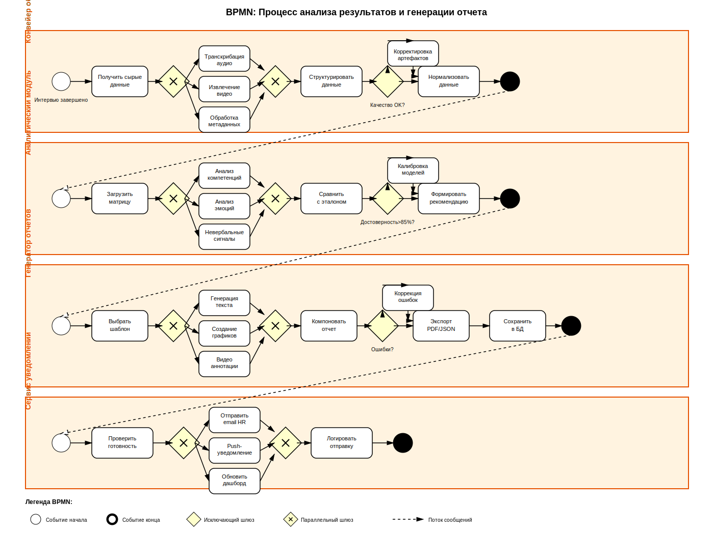
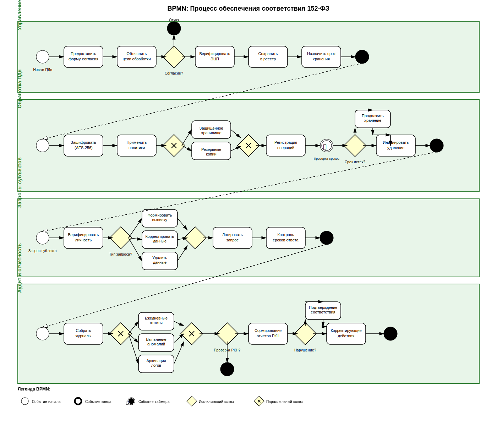

Уровень 1: Context Diagram (Контекстная диаграмма)

Уровень 2: Container Diagram (Контейнерная диаграмма)

Уровень 3: Component Diagram - Interview Service (Декомпозиция ключевого сервиса)

Уровень 4: Component Diagram - AI Processing Service

Уровень 5: Component Diagram - HR Dashboard (Frontend)

Организация и проведение AI-интервью

Анализ результатов интерьвью и генерация отчета


Обеспечение защиты данных


Управление кандидатами и принятие решения

Процесс проведения Ai интерьвью

Процесс формирования отчета по кандидату

Процесс рассмотрения кандидата HR-менеджером

Процесс интеграции с внешними системами

Проведение Ai интерьвью

Анализ и генерация отчета

Соответствие 152-ФЗ

Управление кандидатами

UML
- Организация и проведение AI-интервью
- Анализ результатов и генерация отчета
- Защита персональных данных
- Управление кандидатами и HR-решения
Организация и проведение AI-интервью
Анализ результатов и генерация отчета
Защита персональных данных
Управление кандидатами и HR-решения
Полный процесс проведения AI-интервью

Процесс анализа результатов и генерации отчета

Процесс обеспечения соответствия 152-ФЗ

Процесс управления кандидатами и HR-решений

Компонентная схема